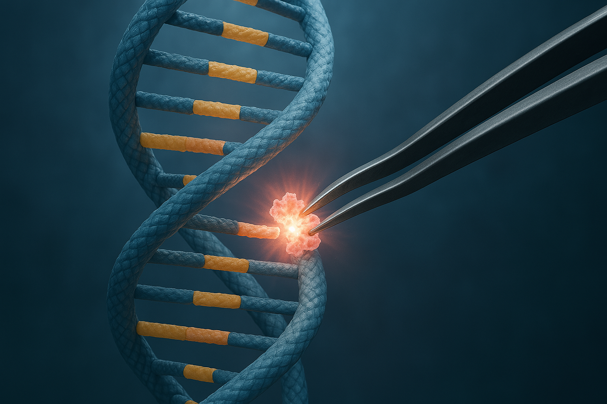
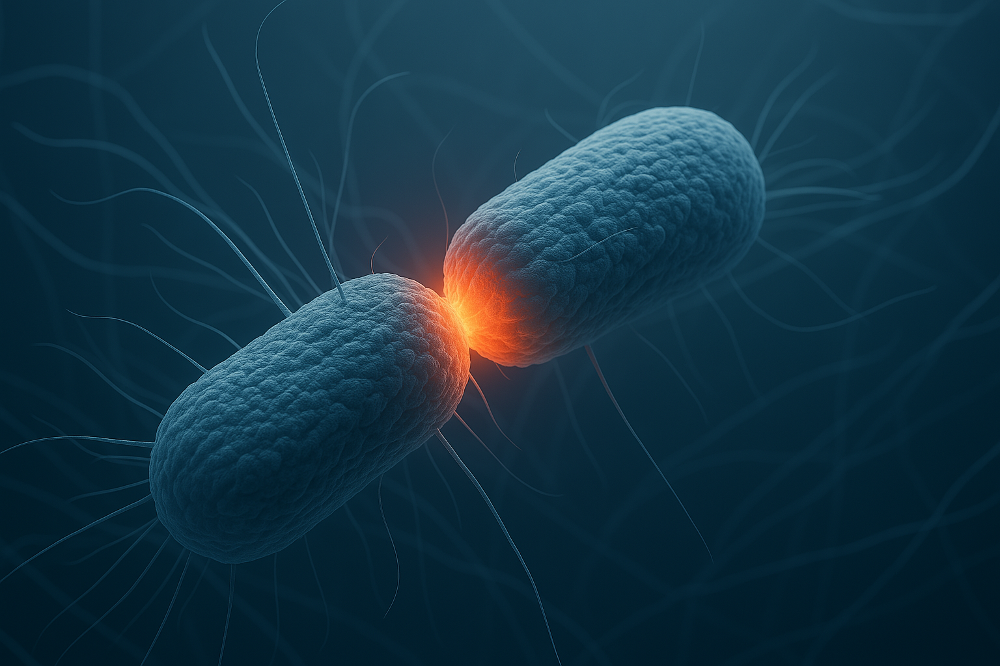

DNA replication DNA-replikation är den livsviktiga processen där cellen exakt
kopierar sitt DNA före celldelning. Den
ursprungliga dubbelspiralen öppnas upp, och varje enskild sträng tjänar som mall. Nya, komplementära
strängar syntetiseras bas-för-bas. Detta ger två identiska DNA-molekyler, var och en innehåller en
gammal sträng. Enzymer driver processen snabbt och noggrant.

DNA-reparation. DNA skadas ständigt. Cellens DNA-reparation är en vital process. Den
upptäcker skador orsakade av
miljö och replikationsfel. Skadade delar tas bort och ersätts. Olika mekanismer används. Effektiv
reparation förhindrar mutationer och sjukdomar, vilket är avgörande för att bevara vår genetiska
information och hälsa.

Bakteriell polär tillväxt. Vid bakteriell polär celltillväxt sker all ny tillväxt
och inbyggnad av cellväggsmaterial endast vid
cellens poler (ändar). Detta innebär att cellen elongerar från en eller båda polerna. Denna
lokaliserade tillväxt skiljer sig markant från diffus elongation och är fundamental för cellformen
hos många bakterier, som Caulobacter.
Min vetenskapliga resa började med en djup fascination för livets mest grundläggande processer på
molekylär nivå. Hur lyckas cellen bevara och exakt kopiera sin enorma mängd genetisk information? Jag
dök ner i DNA-replikationens intrikata värld, processen som säkerställer att arvsmassan dupliceras före
varje celldelning. Men jag insåg snabbt att DNA ständigt utsätts för skador. Detta ledde mig vidare till
DNA-reparationens fält, där jag utforskade de livsviktiga mekanismer cellen använder för att upptäcka,
åtgärda och skydda sin genetiska kod från nedbrytning och mutationer – en grundläggande kamp för att
upprätthålla livets integritet.
Från dessa universella molekylära processer riktade jag sedan blicken mot hur de manifesteras i olika
biologiska sammanhang, särskilt i bakterier. Jag blev särskilt intresserad av bakteriell polär
celltillväxt, en fascinerande strategi där cellen endast växer vid sina poler istället för diffust över
hela ytan. Att studera hur den grundläggande DNA-replikationen och reparationen är tätt kopplade och
samordnade med denna mycket specifika, lokaliserade tillväxtprocess hos bakterier, gav mig en djupare
förståelse för hur molekylära principer anpassas för att driva olika cellulära strategier och bestämma
cellers form och funktion i naturen.